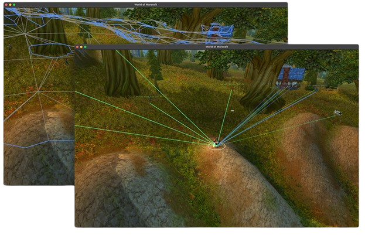
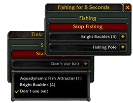
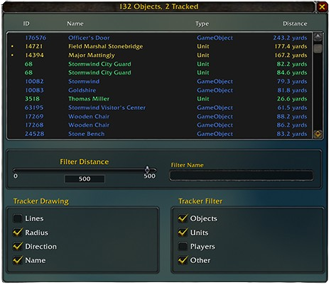

Tinkr All-In-One! Purchase the new all in one token, a single token for all game versions!
Tinkr — WoW Unlocker for macOS and Windows
Tinkr is a modern WoW unlocker for macOS and Windows that allows Lua scripts inside World of Warcraft. It is an all-in-one unlocker solution with navigation, combat rotation, ESP overlay and automation API for all Retail and Classic WoW versions (macOS Intel, Apple Silicon and Windows).
Navigation
Tinkr exposes a complete navigation API including mesh access, route optimization and automatic unstuck routines for reliable movement in any scenario.
Automation
From simple gathering routines to full quest workflows - the Automator API gives you everything needed for reliable in-game automation.
Combat
Build custom combat logic or use supported community scripts to run optimized rotations and perform at your best.
Scripting
The scripting API lets you build tools ranging from visual radars to complete automation flows - simple to start, limitless to scale.
ESP
Draw shapes, text and overlays directly on world objects for real-time visual insight and total awareness.
Exclusive
The first of its kind on macOS - now available on Windows.
Works on Intel and Apple Silicon Macs, plus Windows PCs, delivering the same high performance and security on any device.

Full Advanced API
- Object Manager
- Mesh Navigation
- Fully Scriptable
- Well Documented
- Many Bot Options
Included Utilities
- Advanced Object Manager
- Free Fishing Bot
- Telegram Integration
- wow.vision Integration
- Objects Window
- Fishing UI


What is Tinkr?
Tinkr is a WoW unlocker for macOS and Windows built around a Lua injection engine that gives full access to the World of Warcraft API. Unlike external bots, Tinkr works inside the game engine and offers scriptable access to object manager, navigation mesh, combat routines, ESP overlays, and automation tools. A single token unlocks all game builds including Retail and Classic.
Why use a WoW unlocker on macOS & Windows?
- Native macOS unlocker (Intel + M1/M2)
- Windows unlocker (Win 10/11)
- Lua unlocker for Retail and Classic WoW
- Scriptable bot framework
- Supports custom scripts
- Automation API included
- Free fishing bot included
How to install Tinkr
- Purchase a Tinkr token.
- You will receive an email containing a download link for the launcher.
- Download and run the Tinkr launcher (macOS or Windows).
- Enter your token inside the launcher. If the token is valid, the launcher will authenticate and unlock features.
- If World of Warcraft is detected, Tinkr will launch the game automatically.
- If automatic launch does not work, set your WoW installation path in the configuration file inside the launcher folder.
- Start World of Warcraft normally. When the game loads, look at the bottom of the main menu screen. If installation is successful, you will see: Tinkr ON next to the version number.
FAQ
Is Tinkr a WoW unlocker for macOS & Windows?
Yes, Tinkr is a native unlocker for both macOS and Windows.
Does Tinkr work on WoW Classic?
Yes, one token unlocks Retail and all Classic versions.
Can I run Lua scripts?
Yes, Tinkr is a Lua unlocker that enables full access to scripting inside WoW.
Is it safe?
Tinkr uses a custom engine designed for stability and performance on both platforms.
Tinkr vs traditional WoW unlockers
| macOS support | Full (Intel & M-series) |
| Windows support | Full (Win 10/11) |
| Lua access | Yes |
| Navigation mesh | Built-in |
| ESP | Yes |
| Cost | Single token for all versions |
Tinkr is a WoW unlocker for macOS and Windows designed for Lua scripting, UI customization and automation research. Works on all Retail and Classic World of Warcraft versions. This project provides an API for custom scripts, navigation meshes, ESP overlays and combat logic.